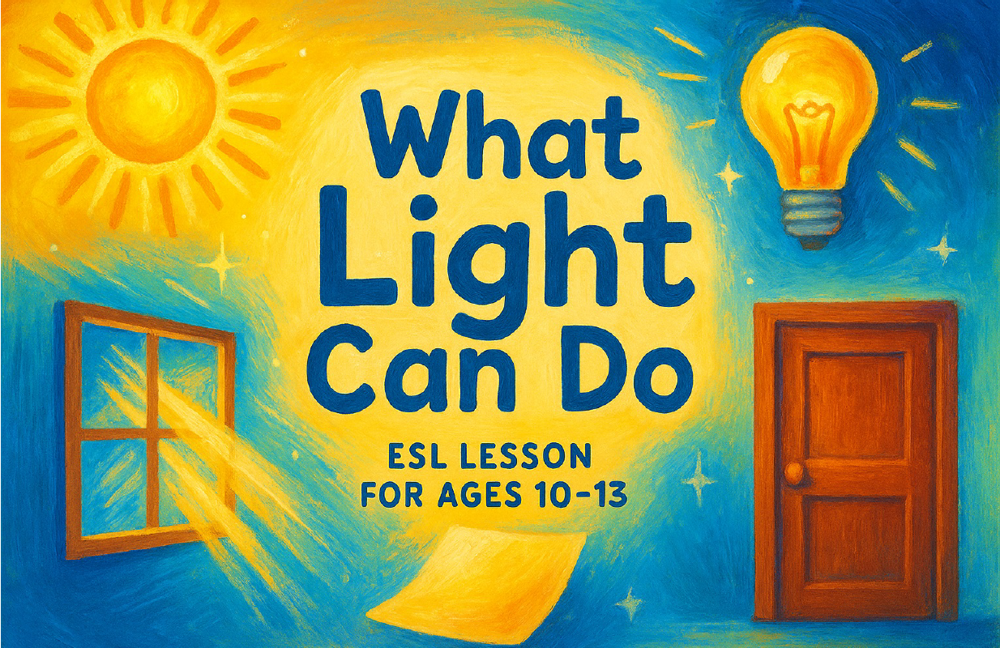

Rain 학생은 오늘 튜터의 질문에 빠짐없이 대답하며 끝까지 성실하게 참여했어요. 새로 배운 light source와 transparent를 스스로 문장에 넣어 말했고, 교재에 없는 태블릿을 보고 "The tablet is the light source."라고 응용한 점이 인상적이었어요. 촛불보다 전등이 좋은 이유를 물었을 때는 "Because the candle is so dark."라고 자기 생각을 표현하기도 했죠. 튜터의 설명을 되묻는 일 없이 거의 다 알아들었고, 답하기 전 생각 시간이 조금 길었던 부분은 다음 수업에서 소리 내어 반복하며 다듬어 가면 좋겠어요.
Today's lesson · 오늘 배운 내용

What Light Can Do
빛이 어디서 오는지(광원), 빛이 통과하는 물체와 통과하지 못하는 물체를 배우고, 우리 집에 있는 광원을 영어로 말해봤어요.
New expressions · 오늘 배운 표현
연습을 마치고 혼자 말할 수 있게 되면 보라 배지가 붙어요
light source✨ 혼자서도 잘 말했어요
"The tablet is the light source." — 교재에 없는 물건에 직접 적용했어요
transparent✨ 혼자서도 잘 말했어요
"The glass is transparent."
opaque튜터와 연습했어요
translucent튜터와 연습했어요
natural / artificial튜터와 연습했어요
Best sentence · 오늘의 최고 문장
"Because the candle is so dark."
촛불보다 전등이 좋은 이유를 물었을 때, 배운 적 없는 상황에서 because로 자기 생각을 표현했어요.
이런 문장도 잘 말했어요
✓"The curtains are translucent."
✓"Light doesn't pass through."
Class activity · 수업 참여
직접 말한 시간
7분
지난 수업보다 +1분
질문 응답률
96%
총 발화
58회
오늘 연습한 표현
7개
💪 혼자 힘으로 말했어요 15회📖 연습하며 말했어요 23회
보라색이 길어질수록 혼자 말하는 힘이 자라고 있다는 뜻이에요.
Speaking skills · 말하기 영역
⭐ 가장 빛난 영역
Comprehension 이해력
튜터의 질문을 되묻지 않고 거의 다 알아들었어요.
🌱 성장 포인트
Fluency 유창성
답하기 전 생각 시간이 길었어요. 배운 문장을 소리 내어 3번씩 반복하면 말이 먼저 나오게 돼요.
Growth · 이만큼 자랐어요
지금까지 익힌 표현
34개 오늘 +2개
첫 수업부터 오늘까지, 혼자 힘으로 말한 표현의 수예요
표현이 쌓이는 중 · 최근 4회 수업
28 → 30 → 32 → 34개
한 번 익힌 표현은 사라지지 않아요. 최근 4회 수업 동안 새 표현 6개가 차곡차곡 쌓였어요.
Level up tips · 이렇게 말하면 더 좋아요
🎯 이번 주 연습 포인트 · 물건 앞에 a 붙이기
이렇게 말했어요
I can see lamp.
✓ 이렇게 말해봐요
I can see a lamp.
오늘 자주 빠뜨렸어요. 관사 a는 우리말에 없어서 처음엔 누구나 빠뜨려요. 물건 이름 앞에 a를 붙여 말하는 연습을 하면 금방 익숙해져요.
💬 한 번 더 연습해요 · artificial
이렇게 말했어요
I prefer the official light.
✓ 이렇게 말해봐요
I prefer the artificial light.
발음이 비슷한 official과 혼동했어요. 오늘 배운 단어라 한 번 더 말해보면 완전히 자기 것이 돼요.
G
Tutor's note · Gemalli 튜터의 한마디
"Rain, you found all five light sources and made wonderful sentences today. I loved your answer about the candle!"
Rain, 오늘 다섯 개의 광원을 모두 찾아내고 멋진 문장들을 만들었어요. 촛불에 대한 대답이 정말 좋았어요!